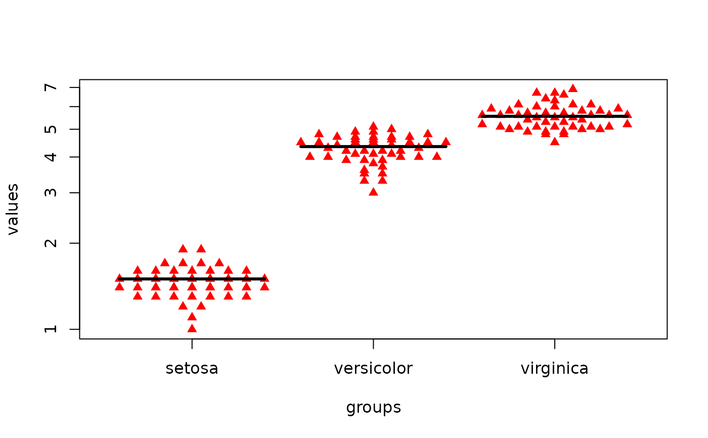
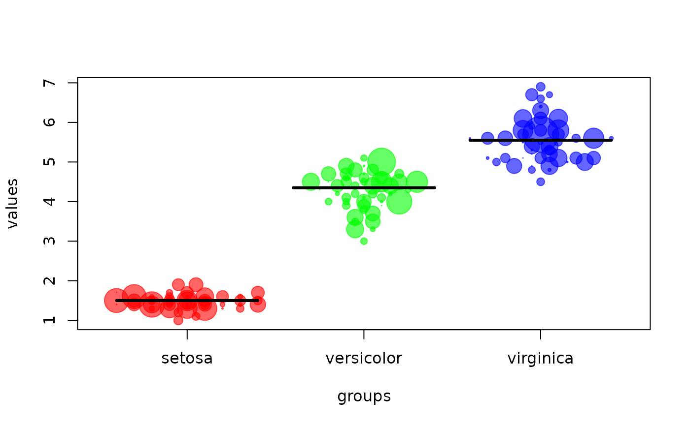
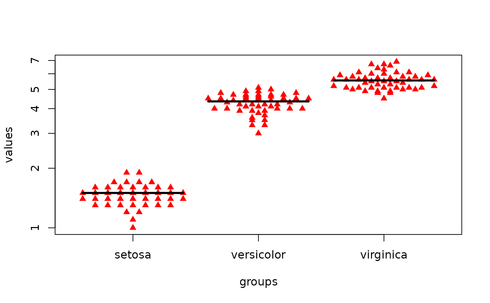
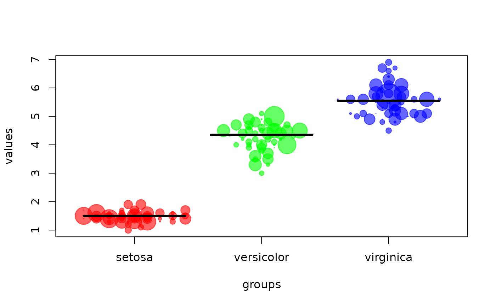

Engelmann-Hecker-Plot - EH-Plot
ehplot.RdThis R function provides a convenient way to visualize the distribution of grouped numerical data.
Usage
ehplot(data, groups, intervals=50, offset=0.1, log=FALSE,
median=TRUE, box=FALSE, boxborder="grey50",
xlab="groups", ylab="values", col="black",
add=FALSE, sort=TRUE, ...)Arguments
- data
Vector of numerical data.
- groups
Vector of group names which should have the same length as data.
- intervals
The data is splitted into a certain number of intervals. If data points are in the same interval they are drawn side-by-side.
- offset
x-distance between two data points at the same interval.
- log
Logarithmic display
- median
To show the median of each group. NAs in data are not considered for calculating the medians.
- box
To underlay a boxplot.
- boxborder
The color of the boxplot if a boxplot is drawn.
- xlab
x-axis label
- ylab
y-axis label
- col
vector of colors for the datapoints. (recycled as necessary).
- add
add this plot to an existing one (i.e. do not call plot.new).
- sort
normally, the groups are sorted by name. To keep the order as provided in the groups-vector, set this to FALSE
- ...
additional plot-parameters will be passed to the plot-function
Author
Robby Engelmann <robby.engelmann@med.uni-rostock.de> and Michael Hecker <michael.hecker@rocketmail.com>
Examples
data(iris)
ehplot(iris$Sepal.Length, iris$Species, intervals=20, cex=1.8, pch=20)
ehplot(iris$Sepal.Width, iris$Species, intervals=20, box=TRUE, median=FALSE)
#> Warning: Some points are overplotted in group virginica. Please consider using a lower offset-value.
 ehplot(iris$Petal.Length, iris$Species, pch=17, col="red", log=TRUE)
#> Warning: Some points are overplotted in group setosa. Please consider using a lower offset-value.

ehplot(iris$Petal.Length, iris$Species, offset=0.06, pch=as.numeric(iris$Species))
# Groups don't have to be presorted:
rnd <- sample(150)
plen <- iris$Petal.Length[rnd]
pwid <- abs(rnorm(150, 1.2))
spec <- iris$Species[rnd]
ehplot(plen, spec, pch=19, cex=pwid, col=rainbow(3, alpha=0.6)[as.numeric(spec)])
#> Warning: Some points are overplotted in group setosa. Please consider using a lower offset-value.

ehplot(iris$Petal.Length, iris$Species, pch=17, col="red", log=TRUE)
#> Warning: Some points are overplotted in group setosa. Please consider using a lower offset-value.

ehplot(iris$Petal.Length, iris$Species, offset=0.06, pch=as.numeric(iris$Species))
# Groups don't have to be presorted:
rnd <- sample(150)
plen <- iris$Petal.Length[rnd]
pwid <- abs(rnorm(150, 1.2))
spec <- iris$Species[rnd]
ehplot(plen, spec, pch=19, cex=pwid, col=rainbow(3, alpha=0.6)[as.numeric(spec)])
#> Warning: Some points are overplotted in group setosa. Please consider using a lower offset-value.
